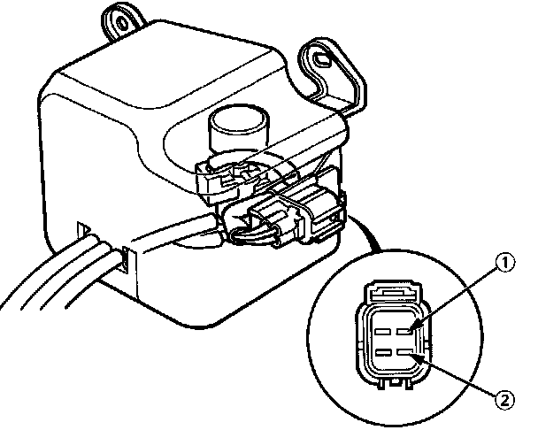
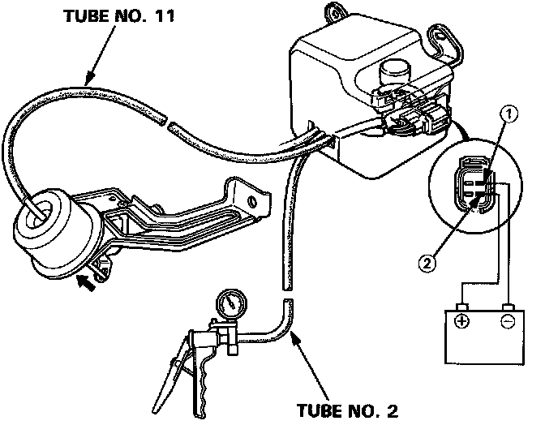

Heater Control Valve: Testing and Inspection
Heater Valve Test
1. Check for continuity between No.(1) and No.(2) terminals at the heater valve solenoid 4P connector.

2. After assembling the heater valve solenoid and heater valve, perform the following to check that they are assembled properly:
(1) Connect the heater valve solenoid to the heater valve with a tube.
(2) Connect the positive cable of a battery to No.(2) terminal of the heater valve solenoid valve, and the negative cable to No.(1) terminal.
(3) Check that the rod of the heater valve is pulled toward the diaphragm when negative pressure is applied to the heater valve solenoid with a vacuum pump.
(4) Check that the rod is returned to the original position when the battery cables are disconnected from the terminals.